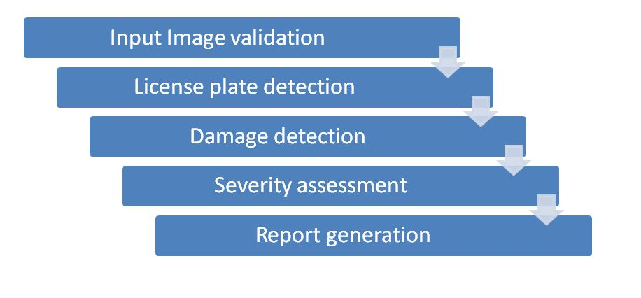
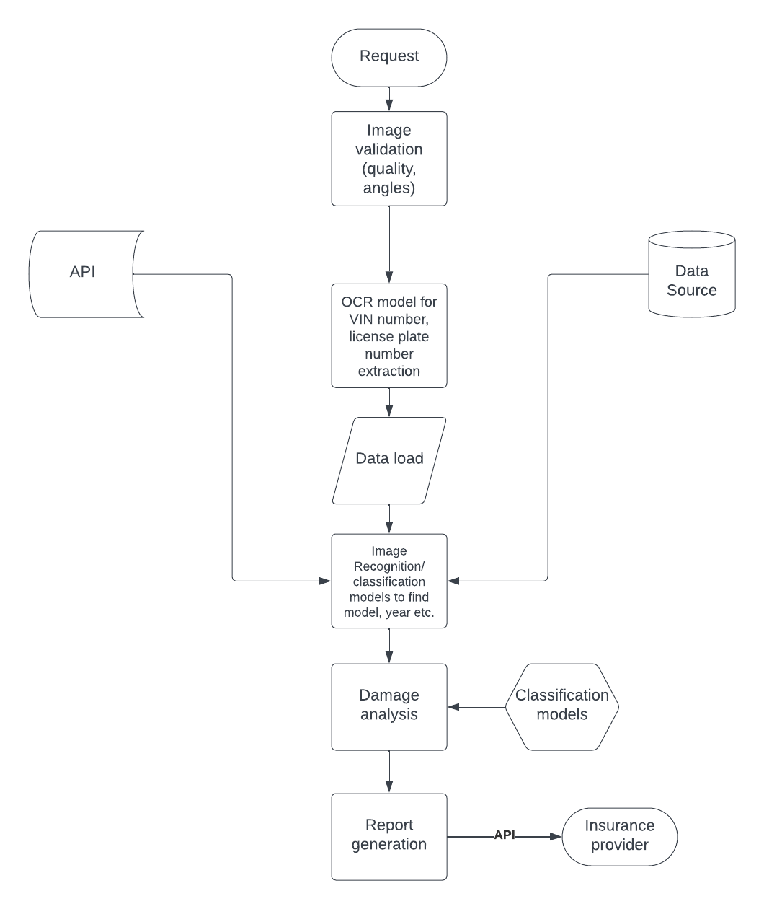

To Streamline vehicle pre inspection processes by making use of state of the art deep
learning object detection models and neural network capabilities to ensure a seamless, cost
effective, quick damage detection and report generation that helps in speeding up the renewal
and claims process for any vehicle insurance client/provider.
Why to streamline:
1. Vehicle insurance costs are expected to continue rising through 2023; Thirdparty insurance for cars and bikes will become costlier from April 1, with the insurance
regulator raising the premium rates by up to 40%. Every year, IRDAI revises premium rates,
taking into account the number of claims made.
2. Customer satisfaction is suffering due to slower car repairs and claims processing.
3. Insurance companies have been accused of pressuring repair facilities to cut corners; Car
repair shops say auto insurance companies are coercing them to use cheap parts and
sometimes dangerous practices to fix vehicles involved in accidents
1. Enhancing the efficiency and reliability of vehicle inspections for insurance claims.
2. It aims to automate the assessment of vehicle damages.
3. Reduce human error, and expedite the claims settlement process.
4. Ultimately, the goal is to improve customer satisfaction, reduce fraudulent claims, and
provide a more seamless experience for insurance policyholders


1. Python
2. Deep learning (object detection models)
3. OCR models
4. Streamlit UI
5. Flask API integration